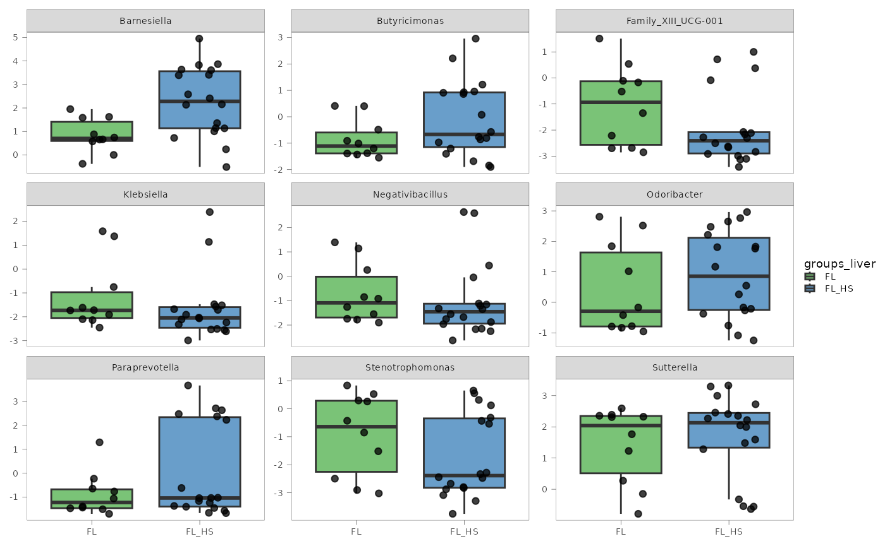
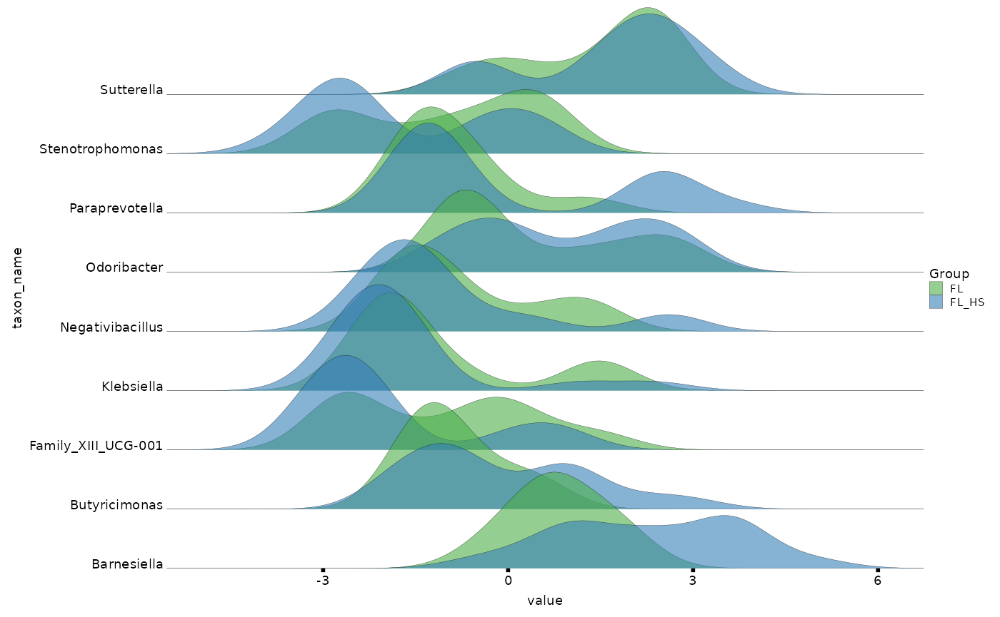

readyomics streamlines single- or multi-omics data analysis pipelines.
The starting input should be a pre-processed raw omics data matrix (e.g. gene counts, metabolites or protein abundances, etc.) and a table of related sample information to be used for additional processing and statistical analysis.
readyomics splits processing and statistical analysis steps into different functions. This has the following advantages:
-
Aligns with best practice in data science
- Avoiding “all-in-one” black-box functions.
- Processing functions (
process_ngs(),process_ms()) prepare data. - Analysis and visualization functions (
dana(),permanova()andready_plots()) use data ready for modeling.
-
Transparency and troubleshooting
- Makes it easy to pinpoint where things go wrong (e.g., transformation vs. model error).
- Encourages users to inspect data at each stage.
-
Supports nonlinear or custom pipelines
- Externally-formatted data ⟶ statistical analysis with readyomics.
- Process raw data with readyomics ⟶ use other downstream analysis methods.
-
Scalability
-
dana()can be set up to run in parallel throughfuture::plan(). -
danaresults from multiple omics can be joined, usingplatformandassayto distinguish results from each dataset. - Effortless
danaresults analysis by pipingadjust_pval(),ready_plots(), and (optionally) alsoadd_feat_name()oradd_taxa().
-
-
Future package extensions
- New pre-processing strategies.
- New analysis methods.
Example
The following example shows the overall workflow of readyomics.
The example data is a 16S rRNA gene sequencing metataxonomics dataset from human fecal samples. They are a subset of 29 samples from a T2DM prospective cohort screened for MASLD:
Forlano, R.*, Martinez-Gili, L.*, Takis, P., Miguens-Blanco, J., Liu, T., Triantafyllou, E., … Manousou, P. (2024). Disruption of gut barrier integrity and host–microbiome interactions underlie MASLD severity in patients with type-2 diabetes mellitus. Gut Microbes, 16(1). https://doi.org/10.1080/19490976.2024.2304157
Example input files can be found in the inst/extdata
folder of the readyomics source, and can be imported using
base::system.file() command as shown below in Import and inspect data.
Note: this example is meant to showcase basic package usage. It is not meant to provide guidelines on suitable study-specific choices for data processing and analysis.
Installation
install.packages("readyomics")Import and inspect data
# Raw matrix of ASV counts
asv_counts <- read.csv(system.file("extdata", "asv_raw_counts.csv", package = "readyomics"),
check.names = FALSE,
row.names = 1)
# Taxonomy table
taxa <- read.csv(system.file("extdata", "taxonomy.csv", package = "readyomics"),
check.names = FALSE,
row.names = 1)
# Sample data
sample_data <- read.csv(system.file("extdata", "sample_data.csv", package = "readyomics"),
check.names = FALSE,
row.names = 1)
head(asv_counts)| RF_029_AKC | RF_055_RJ | RF_061_AJ | RF_071_IT | RF_081_MS | RF_083_SS | RF_089_RT | RF_091_KB | RF_101_HJ | RF_108_RA | RF_110_SE | RF_113_SV | RF_114_NJ | RF_141_AMM | RF_154_SP | RF_158_AK | RF_159_KH | RF_173_DP | RF_175_MS | RF_189_BN | RF_200_KAP | RF_210_RWP | RF_212_FF | RF_219_ME | RF_231_ED | RF_232_HB | RF_233_AN | RF_238_AF | RF_240_EJB | |
|---|---|---|---|---|---|---|---|---|---|---|---|---|---|---|---|---|---|---|---|---|---|---|---|---|---|---|---|---|---|
| ASV1 | 140 | 288 | 249 | 201 | 349 | 289 | 633 | 386 | 572 | 498 | 487 | 270 | 220 | 265 | 439 | 395 | 613 | 433 | 317 | 182 | 93 | 13 | 51 | 50 | 122 | 264 | 305 | 296 | 80 |
| ASV2 | 12 | 13 | 3654 | 14 | 28 | 37 | 56 | 12 | 33 | 69 | 73 | 15 | 0 | 0 | 34 | 37 | 1058 | 50 | 46 | 13 | 773 | 0 | 0 | 1270 | 12 | 0 | 0 | 1374 | 711 |
| ASV3 | 34 | 390 | 533 | 297 | 485 | 520 | 1080 | 285 | 850 | 587 | 766 | 542 | 345 | 355 | 411 | 342 | 548 | 827 | 294 | 251 | 194 | 0 | 56 | 79 | 139 | 337 | 215 | 194 | 103 |
| ASV4 | 235 | 67 | 176 | 38 | 164 | 71 | 150 | 74 | 117 | 136 | 96 | 66 | 52 | 247 | 55 | 92 | 225 | 111 | 112 | 106 | 729 | 34 | 685 | 0 | 60 | 71 | 440 | 0 | 543 |
| ASV5 | 88 | 142 | 131 | 99 | 150 | 150 | 300 | 197 | 222 | 262 | 243 | 124 | 83 | 144 | 116 | 182 | 135 | 243 | 84 | 59 | 25 | 0 | 0 | 0 | 44 | 119 | 40 | 86 | 45 |
| ASV6 | 63 | 160 | 248 | 135 | 212 | 272 | 532 | 171 | 371 | 364 | 267 | 218 | 170 | 228 | 164 | 182 | 289 | 392 | 146 | 131 | 38 | 0 | 25 | 31 | 44 | 138 | 98 | 118 | 61 |
head(taxa)| Kingdom | Phylum | Class | Order | Family | Genus | Species | |
|---|---|---|---|---|---|---|---|
| ASV1 | Bacteria | Bacteroidota | Bacteroidia | Bacteroidales | Bacteroidaceae | Bacteroides | vulgatus |
| ASV2 | Bacteria | Bacteroidota | Bacteroidia | Bacteroidales | Bacteroidaceae | Bacteroides | dorei |
| ASV3 | Bacteria | Proteobacteria | Gammaproteobacteria | Enterobacterales | Enterobacteriaceae | Escherichia/Shigella | Escherichia/Shigella(g)_unclass. |
| ASV4 | Bacteria | Bacteroidota | Bacteroidia | Bacteroidales | Bacteroidaceae | Bacteroides | uniformis |
| ASV5 | Bacteria | Bacteroidota | Bacteroidia | Bacteroidales | Bacteroidaceae | Bacteroides | vulgatus |
| ASV6 | Bacteria | Firmicutes | Bacilli | Lactobacillales | Streptococcaceae | Streptococcus | Streptococcus(g)_unclass. |
head(sample_data)| groups_liver | sex | age | PPI | smoking | alcohol_imp | |
|---|---|---|---|---|---|---|
| RF_029_AKC | FL | 1 | 73 | 1 | 1 | abstinent |
| RF_055_RJ | FL_HS | 2 | 55 | 1 | 2 | abstinent |
| RF_061_AJ | FL | 1 | 71 | 1 | 1 | abstinent |
| RF_071_IT | FL_HS | 1 | 71 | 1 | 2 | moderate |
| RF_081_MS | FL | 1 | 73 | 1 | 1 | excess |
| RF_083_SS | FL | 1 | 70 | 1 | 2 | abstinent |
Format sample_data
sample_data must include a column named
sample_id with unique IDs for each sample
in the study. For longitudinal studies, sample_id still
needs to be unique, therefore a column such as subject_id
can then be used to indicate samples coming from the same
individual.
The omics X data matrix must also use the same
sample_id labels as row names, so that they can be matched
before analysis. readyomics always checks sample ID matching.
In addition, categorical variables must be set as factors for downstream statistical analyses.
Process data using process_ngs()
The choice of processing function will depend on the type of omics
being analysed. We will use process_ngs() in the example,
as it is suitable for metataxonomics.
See also process_ms() if you need to process mass
spectrometry (MS) data like metabolomics or proteomics.
process_ms() is compatible with nuclear magnetic resonance
spectroscopy (NMR) data, although with limited processing options.
# Samples as rows required for process_ngs
asv_counts <- t(asv_counts)
# Process asv_counts data
asv_ready <- process_ngs(X = asv_counts,
sample_data = sample_data,
taxa_table = taxa,
normalise = "none",
transform = "clr",
eco_phyloseq = FALSE)
#> The phyloseq object will be built without phylogenetic tree: 'phylo_tree' not provided.
#> 1 samples removed due to zero total read count or < 500 'min_reads'.
#> 28 samples found in common between 28 rows in 'X' and 29 rows in 'sample_data'.
#> 372 out of 2237 features were kept after 10 % prevalence filter.
#> Zeros will be imputed with 'zCompositions::cmultRepl()' prior to clr-transformation.When verbose = TRUE we can see that some useful
information is printed in the console (see process_ngs()
for all settings and parameters options). For example, that a
phylogenetic tree has not been provided, that 1 sample has been removed
due to falling under the default 500 reads threshold for sequencing
depth, and that 372 features were kept after filtering for 10 %
prevalence.
process_ngs() generates a list object that contains:
- The processed matrix
X_processed(in this case is clr-transformed). - The matched sample_data (
sdata_final). - A
phyloseq_rawobject that contains phyloseq objects for all taxonomic ranks (seebuild_phyloseq()for more information). - A
NULLphyloseq_ecoobject, because counts have not been adjusted by microbial load. Counts adjusted by microbial load are no longer compositional and they are referred as “ecosystem counts”, hence the “_eco” suffix.
We will see how to apply the processed data for common omics analysis.
PCA visualisation with mva()
pca <- mva(X = asv_ready$X_processed,
sample_data = asv_ready$sdata_final,
group_colour = "groups_liver",
plot_title = "Beta diversity (Aitchison)")
#> 28 samples found in common between 28 rows in 'X' and 28 rows in 'sample_data'.
#> PCA
#> 28 samples x 372 variables
#> standard scaling of predictors
#> R2X(cum) pre ort
#> Total 0.533 9 0By default, mva() will show a PCA diagnostics plot,
which is very useful to examine potential outliers, batch effects and
clusters related to the groups of interest.
In addition to storing the ropls::opls() object,
mva() generates a publication-ready scores plot, in this
case color-coded by the variable groups_liver as we
indicated:
pca$scores_plotBecause the plot is generated using ggplot2, it can be further tweaked using ggplot2 functions before export.
Permutational analysis of variance with
permanova()
PERMANOVA is quite popular in microbiome datasets to inspect differences in beta diversity, but it can also be applied to any type of omics data.
By default, the function sets parameter
indenpendent = TRUE, meaning permanova() also
calculates the overall variance for each covariable in the model
independently, in addition to the vegan::adonis2()
output.
# Define model
rhs_model <- ~ groups_liver + alcohol_imp + sex + age + PPI + smoking
# Run PERMANOVA
pova <- permanova(X = asv_ready$X_processed,
sample_data = asv_ready$sdata_final,
formula_rhs = rhs_model,
platform = "ngs",
assay = "Taxonomy",
seed = 165)
#> Warning in permanova(X = asv_ready$X_processed, sample_data = asv_ready$sdata_final, : 'independent = TRUE' but no variable-specific permutation controls found. Default 'perm_control$joint_terms' will be used.
#> 28 samples found in common between 28 rows in 'X' and 28 rows in 'sample_data'.
#> Permutation parameters for groups_liver have not been specified. Default 'perm_control$joint_terms' will be used.
#> Permutation parameters for alcohol_imp have not been specified. Default 'perm_control$joint_terms' will be used.
#> Permutation parameters for sex have not been specified. Default 'perm_control$joint_terms' will be used.
#> Permutation parameters for age have not been specified. Default 'perm_control$joint_terms' will be used.
#> Permutation parameters for PPI have not been specified. Default 'perm_control$joint_terms' will be used.
#> Permutation parameters for smoking have not been specified. Default 'perm_control$joint_terms' will be used.We see a warning and related verbose message (when
verbose = TRUE; the default) about permutation parameters
being used for all the variables. This is because you can set up
specific permutation control parameters for each covariable with
perm_control. This is particularly useful for example in
longitudinal studies, where you might need to apply permutation blocks
according to certain variables. In our case, we are good with the
default 999 unrestricted random permutations, so we can ignore the
warning and verbose. See permanova() for more
information.
The output is a list that contains the distance matrix and
permutation matrix used, as well as two tables of results
permanova_joint, which is the default
vegan::adonis2() result, and permanova_indep,
when independent = TRUE.
pova$permanova_joint| Df | SumOfSqs | R2 | F | Pr(>F) | platform | assay | |
|---|---|---|---|---|---|---|---|
| Model | 8 | 4642.217 | 0.313521 | 1.084683 | 0.09 | ngs | Taxonomy |
| Residual | 19 | 10164.501 | 0.686479 | NA | NA | ngs | Taxonomy |
| Total | 27 | 14806.718 | 1.000000 | NA | NA | ngs | Taxonomy |
pova$permanova_indep| Df | SumOfSqs | R2 | F | Pr(>F) | var_name | platform | assay | |
|---|---|---|---|---|---|---|---|---|
| groups_liver.Model | 1 | 461.8705 | 0.0311933 | 0.8371392 | 0.940 | groups_liver | ngs | Taxonomy |
| groups_liver.Residual | 26 | 14344.8473 | 0.9688067 | NA | NA | groups_liver | ngs | Taxonomy |
| groups_liver.Total | 27 | 14806.7179 | 1.0000000 | NA | NA | groups_liver | ngs | Taxonomy |
| alcohol_imp.Model | 2 | 1088.7284 | 0.0735294 | 0.9920627 | 0.499 | alcohol_imp | ngs | Taxonomy |
| alcohol_imp.Residual | 25 | 13717.9895 | 0.9264706 | NA | NA | alcohol_imp | ngs | Taxonomy |
| alcohol_imp.Total | 27 | 14806.7179 | 1.0000000 | NA | NA | alcohol_imp | ngs | Taxonomy |
| sex.Model | 1 | 545.4117 | 0.0368354 | 0.9943482 | 0.439 | sex | ngs | Taxonomy |
| sex.Residual | 26 | 14261.3062 | 0.9631646 | NA | NA | sex | ngs | Taxonomy |
| sex.Total | 27 | 14806.7179 | 1.0000000 | NA | NA | sex | ngs | Taxonomy |
| age.Model | 1 | 527.1507 | 0.0356021 | 0.9598272 | 0.580 | age | ngs | Taxonomy |
| age.Residual | 26 | 14279.5672 | 0.9643979 | NA | NA | age | ngs | Taxonomy |
| age.Total | 27 | 14806.7179 | 1.0000000 | NA | NA | age | ngs | Taxonomy |
| PPI.Model | 1 | 653.3245 | 0.0441235 | 1.2001672 | 0.098 | PPI | ngs | Taxonomy |
| PPI.Residual | 26 | 14153.3934 | 0.9558765 | NA | NA | PPI | ngs | Taxonomy |
| PPI.Total | 27 | 14806.7179 | 1.0000000 | NA | NA | PPI | ngs | Taxonomy |
| smoking.Model | 2 | 1421.2488 | 0.0959868 | 1.3272310 | 0.007 | smoking | ngs | Taxonomy |
| smoking.Residual | 25 | 13385.4691 | 0.9040132 | NA | NA | smoking | ngs | Taxonomy |
| smoking.Total | 27 | 14806.7179 | 1.0000000 | NA | NA | smoking | ngs | Taxonomy |
Differential ANAlysis with dana()
A common analysis goal with omics data is to try and find omic
features associated with traits of interest. dana() is
readyomics function for differential analysis. At present,
dana() supports linear regressions with
stats::lm() and linear mixed effects models with
lme4::lmer(). dana() main strengths are:
Full flexibility on model formula (random effects, interaction terms).
-
Likelihood ratio tests (LRT) in addition to coefficient P values.
- LRT is especially recommended for small studies (approx. below 100 samples).
- Any formula terms can be tested with LRT (interaction terms, random effects).
- Several terms can be tested at once
(e.g.
term_LRT = c("sex" , "BMI", "1 | country")).
Easy set up to run in parallel using
future::plan()- user has full control, allowing good scalability for big data.Toggable progress bar with progressr.
We will fit a linear regression with the main variables in our dataset:
# future::plan(multisession, workers = 4) # For running 4 processes in parallel
# progressr::handlers(global = TRUE) # To show progress bar
dana_asv <- dana(X = asv_ready$X_processed,
sample_data = asv_ready$sdata_final,
formula_rhs = rhs_model,
term_LRT = "groups_liver",
platform = "ngs")
#> Warning in dana(X = asv_ready$X_processed, sample_data = asv_ready$sdata_final, : Set 'future::plan' parallel strategy to speed up computation.
#> 28 samples found in common between 28 rows in 'X' and 28 rows in 'sample_data'.
#> Using model: stats::lm.
# plan(sequential) # To disable parallel processingWe first see a warning message suggesting to use parallel computing
due to the X matrix having more than 100 features. However
this can be ignored as stats::lm() is very quick
anyway.
The dana() function generates a dana object
including the input data used, and the publication-ready
fit table summarizing the main model results for each
feature analysed ("feat_id" column).
head(dana_asv$fit)| Coefficient | Estimate | Std. Error | t value | Pr(>|t|) | 2.5 % | 97.5 % | feat_id | platform |
|---|---|---|---|---|---|---|---|---|
| (Intercept) | 5.7417549 | 0.9926354 | 5.7843541 | 0.0000142 | 3.6641450 | 7.8193648 | ASV1 | ngs |
| groups_liverFL_HS | 0.2230096 | 0.2429450 | 0.9179426 | 0.3701552 | -0.2854802 | 0.7314994 | ASV1 | ngs |
| alcohol_impexcess | -0.0880760 | 0.4729165 | -0.1862400 | 0.8542306 | -1.0779017 | 0.9017497 | ASV1 | ngs |
| alcohol_impmoderate | -0.1708858 | 0.4263501 | -0.4008109 | 0.6930308 | -1.0632467 | 0.7214752 | ASV1 | ngs |
| sex2 | -0.4434339 | 0.2604760 | -1.7023984 | 0.1049857 | -0.9886163 | 0.1017486 | ASV1 | ngs |
| age | -0.0102866 | 0.0147685 | -0.6965206 | 0.4945367 | -0.0411974 | 0.0206243 | ASV1 | ngs |
If working with multiple omics, is useful to also specify
platform and assay columns for seamless
downstream omics results integration.
When one or more terms are specified for likelihood ratio testing
with term_LRT, dana also includes the
lrt table with the LRT results. In our case we used LRT to
test groups_liver.
head(dana_asv$lrt)| Res.Df | RSS | Df | Sum of Sq | F | Pr(>F) | term | feat_id | platform |
|---|---|---|---|---|---|---|---|---|
| 20 | 6.641948 | NA | NA | NA | NA | groups_liver | ASV1 | ngs |
| 19 | 6.359897 | 1 | 0.2820509 | 0.8426186 | 0.3701552 | groups_liver | ASV1 | ngs |
| 20 | 70.044952 | NA | NA | NA | NA | groups_liver | ASV2 | ngs |
| 19 | 69.880252 | 1 | 0.1647003 | 0.0447810 | 0.8346607 | groups_liver | ASV2 | ngs |
| 20 | 8.220301 | NA | NA | NA | NA | groups_liver | ASV3 | ngs |
| 19 | 8.044147 | 1 | 0.1761536 | 0.4160687 | 0.5266180 | groups_liver | ASV3 | ngs |
Adjusting for multiple comparisons with
adjust_pval()
We leverage R base pipes to conveniently add adjusted P values to the
dana object results with adjust_pval().
dana_asv <- dana_asv |>
adjust_pval(padj_by = "terms",
padj_method = "BH",
padj_method_LRT = "BH")The fit table now has new columns with the adjusted P
values. Because we chose to adjust by terms in the fit
table (padj_by = "terms"), this will adjust each covariable
P value individually. We see more than one column of adjusted P values
with the format
padj_[padj_method]_[term]
(e.g. "padj_BH_sex2").
The alternative would be (padj_by = "all") in which all
nominal P values in fit will be adjusted together. In this
case, a single column would be added to fit, with the
format
padj_[padj_method].
If a formula fixed term was also tested via LRT,
adjust_pval() will also add the adjusted LRT P value to the
fit table. LRT P values have the "_LRT" suffix
(see last column "padj_BH_groups_liver_LRT").
head(dana_asv$fit)| Coefficient | Estimate | Std. Error | t value | Pr(>|t|) | 2.5 % | 97.5 % | feat_id | platform | padj_BH_groups_liverFL_HS | padj_BH_alcohol_impexcess | padj_BH_alcohol_impmoderate | padj_BH_sex2 | padj_BH_age | padj_BH_PPI2 | padj_BH_smoking2 | padj_BH_smoking3 | padj_BH_groups_liver_LRT |
|---|---|---|---|---|---|---|---|---|---|---|---|---|---|---|---|---|---|
| (Intercept) | 5.7417549 | 0.9926354 | 5.7843541 | 0.0000142 | 3.6641450 | 7.8193648 | ASV1 | ngs | NA | NA | NA | NA | NA | NA | NA | NA | NA |
| groups_liverFL_HS | 0.2230096 | 0.2429450 | 0.9179426 | 0.3701552 | -0.2854802 | 0.7314994 | ASV1 | ngs | 0.9252859 | NA | NA | NA | NA | NA | NA | NA | 0.9252859 |
| alcohol_impexcess | -0.0880760 | 0.4729165 | -0.1862400 | 0.8542306 | -1.0779017 | 0.9017497 | ASV1 | ngs | NA | 0.9986091 | NA | NA | NA | NA | NA | NA | NA |
| alcohol_impmoderate | -0.1708858 | 0.4263501 | -0.4008109 | 0.6930308 | -1.0632467 | 0.7214752 | ASV1 | ngs | NA | NA | 0.955298 | NA | NA | NA | NA | NA | NA |
| sex2 | -0.4434339 | 0.2604760 | -1.7023984 | 0.1049857 | -0.9886163 | 0.1017486 | ASV1 | ngs | NA | NA | NA | 0.8523934 | NA | NA | NA | NA | NA |
| age | -0.0102866 | 0.0147685 | -0.6965206 | 0.4945367 | -0.0411974 | 0.0206243 | ASV1 | ngs | NA | NA | NA | NA | 0.9220974 | NA | NA | NA | NA |
Similarly, we can inspect the lrt table with the added
adjusted P values.
head(dana_asv$lrt)| Res.Df | RSS | Df | Sum of Sq | F | Pr(>F) | term | feat_id | platform | padj_BH_groups_liver |
|---|---|---|---|---|---|---|---|---|---|
| 20 | 6.641948 | NA | NA | NA | NA | groups_liver | ASV1 | ngs | NA |
| 19 | 6.359897 | 1 | 0.2820509 | 0.8426186 | 0.3701552 | groups_liver | ASV1 | ngs | 0.9252859 |
| 20 | 70.044952 | NA | NA | NA | NA | groups_liver | ASV2 | ngs | NA |
| 19 | 69.880252 | 1 | 0.1647003 | 0.0447810 | 0.8346607 | groups_liver | ASV2 | ngs | 0.9949226 |
| 20 | 8.220301 | NA | NA | NA | NA | groups_liver | ASV3 | ngs | NA |
| 19 | 8.044147 | 1 | 0.1761536 | 0.4160687 | 0.5266180 | groups_liver | ASV3 | ngs | 0.9379068 |
While a single adjustment method should be chosen a priori,
it is possible to add more than one P value adjustment method
(e.g. padj_method = c("BH", "storey"),
padj_method_LRT = c("BH", "bonferroni")). See
adjust_pval() for more information.
Adding feature labels with add_feat_name() or
add_taxa()
Original labels for some omics data can contain non-alphanumeric
characters and symbols that could be problematic to fit
dana() models. process_ms() allows to rename
features as "feat_1", "feat_2", and so on, by
setting rename_feat = TRUE, while storing the original
labels.
add_feat_name() can then be used to add the original
labels to the dana object before plotting significant
results.
Similarly, for metataxonomics and metagenomics data, it is more
interesting to read the genus/species/strain of origin rather than a
cryptic "ASV1". In this case, we would use
add_taxa(). Which also adds the corresponding higher
hierarchy taxa names.
dana_asv <- dana_asv |>
add_taxa(taxa_table = taxa,
taxa_rank = "asv")We can see that various columns have been added to the
fit table. Because taxa_rank = "asv", the
column for the feature label taxon_name by default adds the
species (if provided) or the genus name to the ASV ID, collapsed by “_“,
a format quite common in publication plots.
head(dana_asv$fit)| Coefficient | Estimate | Std. Error | t value | Pr(>|t|) | 2.5 % | 97.5 % | feat_id | platform | padj_BH_groups_liverFL_HS | padj_BH_alcohol_impexcess | padj_BH_alcohol_impmoderate | padj_BH_sex2 | padj_BH_age | padj_BH_PPI2 | padj_BH_smoking2 | padj_BH_smoking3 | padj_BH_groups_liver_LRT | taxon_rank | taxon_name | species | genus | family | order | class | phylum |
|---|---|---|---|---|---|---|---|---|---|---|---|---|---|---|---|---|---|---|---|---|---|---|---|---|---|
| (Intercept) | 5.7417549 | 0.9926354 | 5.7843541 | 0.0000142 | 3.6641450 | 7.8193648 | ASV1 | ngs | NA | NA | NA | NA | NA | NA | NA | NA | NA | asv | vulgatus_ASV1 | vulgatus | Bacteroides | Bacteroidaceae | Bacteroidales | Bacteroidia | Bacteroidota |
| groups_liverFL_HS | 0.2230096 | 0.2429450 | 0.9179426 | 0.3701552 | -0.2854802 | 0.7314994 | ASV1 | ngs | 0.9252859 | NA | NA | NA | NA | NA | NA | NA | 0.9252859 | asv | vulgatus_ASV1 | vulgatus | Bacteroides | Bacteroidaceae | Bacteroidales | Bacteroidia | Bacteroidota |
| alcohol_impexcess | -0.0880760 | 0.4729165 | -0.1862400 | 0.8542306 | -1.0779017 | 0.9017497 | ASV1 | ngs | NA | 0.9986091 | NA | NA | NA | NA | NA | NA | NA | asv | vulgatus_ASV1 | vulgatus | Bacteroides | Bacteroidaceae | Bacteroidales | Bacteroidia | Bacteroidota |
| alcohol_impmoderate | -0.1708858 | 0.4263501 | -0.4008109 | 0.6930308 | -1.0632467 | 0.7214752 | ASV1 | ngs | NA | NA | 0.955298 | NA | NA | NA | NA | NA | NA | asv | vulgatus_ASV1 | vulgatus | Bacteroides | Bacteroidaceae | Bacteroidales | Bacteroidia | Bacteroidota |
| sex2 | -0.4434339 | 0.2604760 | -1.7023984 | 0.1049857 | -0.9886163 | 0.1017486 | ASV1 | ngs | NA | NA | NA | 0.8523934 | NA | NA | NA | NA | NA | asv | vulgatus_ASV1 | vulgatus | Bacteroides | Bacteroidaceae | Bacteroidales | Bacteroidia | Bacteroidota |
| age | -0.0102866 | 0.0147685 | -0.6965206 | 0.4945367 | -0.0411974 | 0.0206243 | ASV1 | ngs | NA | NA | NA | NA | 0.9220974 | NA | NA | NA | NA | asv | vulgatus_ASV1 | vulgatus | Bacteroides | Bacteroidaceae | Bacteroidales | Bacteroidia | Bacteroidota |
Visualise results with ready_plots()
We can pipe ready_plots() to the previous command, or
skip the previous step and directly apply ready_plots() to
the dana object to explore the results with the default
feature IDs ("feat_id" column).
ready_plots() automatically generates and stores the
most commonly used publication-ready plots:
- Differential analysis significant coefficients (volcano, dotplot, heatmap - capped at 50 features),
- Significant features abundance (capped at the 10 most significant,
but plots for specific features can be requested with
X_colnamesparameter).
# Generates error due to lack of significant features:
dana_asv <- dana_asv |>
ready_plots(term_name = "groups_liver", # Formula fit term of interest
pval_match = "groups_liver_LRT", # LRT adjusted P values will be used
sdata_var = "groups_liver", # Grouping variable for individual feature plots
group_colours = c(FL = "#4daf4a", # Optional color customization
FL_HS = "#377eb8"))
#> Error in ready_plots(dana_asv, term_name = "groups_liver", pval_match = "groups_liver_LRT", : No significant results at selected 0.1 significance threshold.In our example, no features were significant after multiple
comparison correction. This prompts an error message from
ready_plots() which halts execution. This is somewhat
expected as we are using a small portion of the original dataset as a
toy example.
A formal analysis would end here, concluding that the null hypothesis
could not be rejected. In our case, we will use the nominal P value to
showcase the ready_plots() functionality.
dana_asv <- dana_asv |>
ready_plots(term_name = "groups_liver",
pval_match = "Pr", # Nominal P value for illustration purposes
sdata_var = "groups_liver",
group_colours = c(FL = "#4daf4a",
FL_HS = "#377eb8"))
#> 33 significant results found at selected 0.1 significance threshold.
#> 'X_colnames' = NULL: the first 10 most significant features will be plotted.When verbose = TRUE (the default)
ready_plots() displays the total number of significant
features at the chosen P value threshold. We can inspect all plots at
once by simply running:
dana_asv$plots
#> $coeff_volcano
#> Warning: Removed 339 rows containing missing values or values outside the scale range
#> (`geom_text_repel()`).
#> Warning: ggrepel: 7 unlabeled data points (too many overlaps). Consider
#> increasing max.overlaps#>
#> $coeff_heatmap#>
#> $coeff_point#>
#> $feat_boxplot#>
#> $feat_violin#>
#> $feat_ridge
#> Picking joint bandwidth of 0.471Because plots are generated with ggplot2, they can easily be further customized.
Bonus (microbiome): dana() for alpha diversity
# Compute alpha diversity measures for the ASV phyloseq object
alpha <- phyloseq::estimate_richness(asv_ready$phyloseq_raw$asv) |>
dplyr::select(-matches("ace|chao|fisher")) |>
scale()
# Calculate alpha diversity differences among groups with dana()
dana_alpha <- dana(X = alpha,
sample_data = asv_ready$sdata_final,
formula_rhs = rhs_model,
term_LRT = "groups_liver",
platform = "ngs")
#> 28 samples found in common between 28 rows in 'X' and 28 rows in 'sample_data'.
#> Using model: stats::lm.Bonus (microbiome): dana() for higher taxonomic
ranks
The following example shows only the code for genus rank, but this
code could be easily wrapped into a function that iterates across all
taxa ranks to analyse all at once, using parallel computation with
future::plan().
# CLR-transform genus rank counts table
genus_ready <- process_ngs(X = as.data.frame(asv_ready$phyloseq_raw$genus@otu_table),
sample_data = asv_ready$sdata_final,
taxa_table = taxa,
normalise = "none",
transform = "clr",
raw_phyloseq = FALSE,
eco_phyloseq = FALSE,
verbose = FALSE)
# Run dana
dana_genus <- dana(X = genus_ready$X_processed,
sample_data = genus_ready$sdata_final,
formula_rhs = rhs_model,
term_LRT = "groups_liver",
platform = "ngs") |>
adjust_pval(padj_by = "terms",
padj_method = "BH",
padj_method_LRT = "BH") |>
add_taxa(taxa_table = taxa,
taxa_rank = "genus") |>
ready_plots(term_name = "groups_liver",
pval_match = "Pr", # Nominal P value for illustration purposes
sdata_var = "groups_liver",
group_colours = c(FL = "#4daf4a",
FL_HS = "#377eb8"))
#> Warning in dana(X = genus_ready$X_processed, sample_data = genus_ready$sdata_final, : Set 'future::plan' parallel strategy to speed up computation.
#> 28 samples found in common between 28 rows in 'X' and 28 rows in 'sample_data'.
#> Using model: stats::lm.
#> 9 significant results found at selected 0.1 significance threshold.
#> 'X_colnames' = NULL: the first 10 most significant features will be plotted.
# Inspect plots
dana_genus$plots
#> $coeff_volcano
#> Warning: Removed 97 rows containing missing values or values outside the scale range
#> (`geom_text_repel()`).#>
#> $coeff_heatmap
#>
#> $coeff_point#>
#> $feat_boxplot
#>
#> $feat_violin#>
#> $feat_ridge
#> Picking joint bandwidth of 0.595